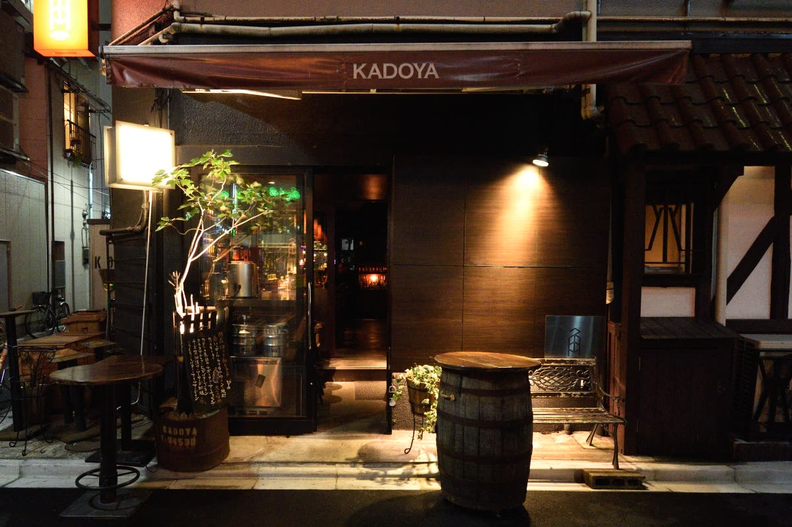

株式会社けいか堂飲料店Kadoya Group / Yushima, Tokyo
株式会社けいか堂飲料店Kadoya Group / Yushima, Tokyo
ENGLISH
湯島天神下の酒場４店舗｜全店 18:00〜深夜・日曜定休
03-3831-4775（バーカドヤ）
 株式会社けいか堂飲料店Kadoya Group / Yushima, Tokyo
株式会社けいか堂飲料店Kadoya Group / Yushima, Tokyo
角地の小さなバーから、
湯島天神下の四つの酒場へ。
株式会社けいか堂飲料店は、東京・湯島で飲食店を営む会社です。角地にひっそりと佇むバー「カドヤ」に始まり、代表の故郷・宮城県北部の食と酒を届ける「くりはら屋」、蕎麦で〆る酒場「蕎麦酒場 角ヤ」の湯島天神店・春日テラス店と、徒歩2分圏内に四つの店を構えてきました。
私たちが大切にしているのは、「初めて入ってもどこか懐かしい」こと。照明を落とした店内、銅マグで出すハイボール、生産者の顔が見える素材。湯島で働く人、暮らす人、遊びに来た人が、夜6時から深夜まで、ふらりと立ち寄れる場所でありたいと思っています。

| 商号 | 株式会社けいか堂飲料店 |
|---|---|
| 所在地 | 〒113-0034 東京都文京区湯島3-45-3 |
| 電話 | 03-3831-4775（バーカドヤ） |
| 代表者 | 代表取締役 村山 |
| 事業内容 | 飲食店の経営（バー、居酒屋、蕎麦酒場） |
| 店舗数 | 4店舗（東京都文京区湯島） |
| 営業時間 | 全店 日曜定休（営業時間は店舗により異なります） |
| 公式サイト | www.keikadou.co.jp |
ご予約・貸切・宴会のご相談は、各店舗へ直接お電話ください。取材・お取引のご相談はバーカドヤまでお願いいたします。
ホール・キッチンスタッフ（アルバイト・社員）を随時募集しています。深夜営業のため、夜型の方、飲食の経験者はもちろん、未経験の方も歓迎します。まずは働いてみたい店舗へお電話ください。